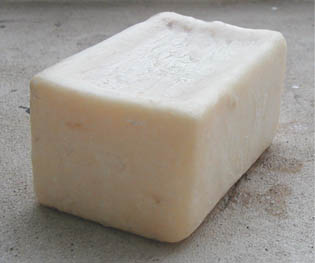

Le concept de savon s'est
affiné depuis. Lire un texte consacré
aux amphiphiles in Les dialogues de Dotapea, chap. I, A propos des liants et un autre
passage sur la même page.
En ce qui concerne les
"objets savons" (aux sens cosmétique, domestique, nettoyant),
signalons que ceux-ci sont obtenus à l'aide de soude
potassique ou sodique et d'une ou plusieurs huiles
généralement végétales. Certaines de ces huiles ne sont autres que celles
qu'utilisent les artistes, les décorateurs, les ébénistes et les cuisiniers.
Pour cette raison, nous avons référencé en fin d'article
certains outils qui peuvent servir dans l'exercice de ces différents métiers.
Quel est le rôle de l'objet
savon commun ? Essentiellement, il solubilise les graisses. A l'opposé, en
peinture décorative ou artistique - nettoyage des outils et surfaces mis à part
-, on utilise plus souvent le savon comme un matériau "final" faisant partie de
l'oeuvre.
Plus généralement, certaines peintures faisant
intervenir acides, bases et alcools posent un problème de réversibilité
qui peut être résolu
par des dosages et choix de produits équilibrés et réfléchis donnant un
résultat raisonnable et adapté moyennant une conservation tout de même assez attentive.
D'autres peintures (ou autres produits) ne sont pas réversibles. La
saponification ne peut plus être "redémarrée" avec des moyens
normaux dès lors que l'eau s'est évaporée.
Par
exemple, la combinaison
acide
phtalique/glycérol, une fois sèche, donne une
substance particulièrement résistante qui n'est autre que la peinture
glycérophtalique. Cet ester forme une couche dure qui, ne réagissant plus à l'eau,
n'a plus guère de chance de se saponifier... en théorie.
En
théorie seulement car un support très alcalin (béton frais, plâtre frais,
chaux) aura toujours tendance à agresser les peintures habituelles
(huile, acrylique, glycéro, etc.), qui donnent des esters. Le terme "saponification" désigne d'ailleurs
parfois en peinture décorative un
phénomène de décomposition des liants provoqué par l'application de peinture
sur ce genre de supports.
L'environnement
et le dosage de tous ces corps chimiques sont toujours déterminants pour un
usage, un contexte donné.
De même, certains liants dits "saponifiés" (les cires saponifiées, par exemple)
sont finalement fort stables une fois secs. Il
n'existe pas de règle générale sur le plan de la conservation au-delà des
propriétés de chaque liant. Un alcali puissant comme
l'ammoniaque, par exemple, déclenche une
réaction de dissolution radicale même sur des peintures à l'huile sèches depuis
des années, alors qu'une averse suffira à laver une gouache oubliée à
l'extérieur. Chaque liant, chaque procédé de peinture, chaque ester plus
généralement, a son comportement spécifique. Tout cela se mesure (voir
ci-dessous).
Notes
Dans certaines
conditions - présence de métaux
alcalinoterreux -, une saponification/estérification risque de former
des écumes, des dépôts de sels
minéraux, des blanchiments et autres effets picturaux plus ou
moins souhaitables.
L'élimination mécanique des esters, des acides et des alcools n'est rien d'autre qu'un nettoyage - ce qui
peut d'ailleurs être envisagé, pourquoi pas, dans certaines perspectives
artistiques originales où il s'agirait de faire mousser la peinture, au sens...
propre.
Voir absolument Les sels, leur formation, gras, graisse et savon,
émulsion
colle/huile/savon noir, savon noir in glossaire, soude, soude
caustique et potasse in
glossaire.
Mesures (indice
d'ester, indice de saponification et indice d'iode)
On peut mesurer différentes propriétés d'un ester.
* L'indice d'ester indique la quantité de potasse
(une matière alcaline utilisée comme référence) nécessaire pour obtenir une
réaction de saponification. Il représente en quelque sorte la "solidité" d'un
ester.
* L'indice de saponification est également exprimé par une quantité de
potasse, correspondant cette fois à l'obtention d'un pH
neutre.
Visite
conseillé :
soapcalc.com/calc/SoapCalcWP.asp
Cette page destinée à
aider les
savonniers dans leur
"calcul de potasse" permet notamment
de connaître cet indice pour différents corps gras
utilisés par d'autres corps de métiers.
Ce lien a été rétabli en 2013.
S'il rompait à nouveau, merci de bien vouloir nous le
signaler.
* Enfin, l'indice d'iode, lui, concerne directement la saturation de l'ester.
Il est très important lorsqu'il s'agit, pour un artiste
ou un ébéniste (entre autres spécialités), de savoir si l'huile
qu'il compte utiliser pour peindre sera "siccative".
Cliquer ici.
Retour début de page